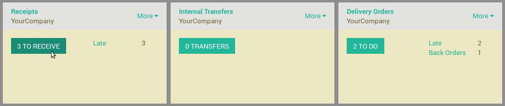
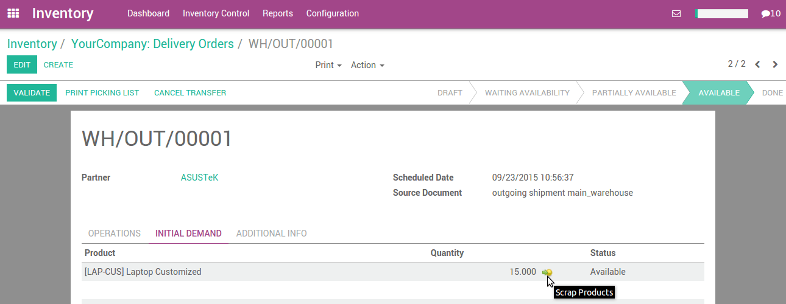

概述
报废意味着没有经济价值或者最基本材料的价值浪费
通过循环内容可以修复。
在仓库中有时候你会发现有些产品坏掉了或者因为到期而不能继续使用或者别的原因。你要经常在拣货调拨或者库存盘点的时候注意这些。
既然这些产品不适合继续存放或者正常销售，就需把他们报废。
已经报废的产品作为库存的一部分不能在系统中反映出来，报废的材料将会在实际操作中移动到报废区域。
配置
当安装库存管理的时候，YuanCloud会自动创建一个命名为**虚拟库位／报废**报废库位。
要创建额外的报废库位，进入菜单 然后勾选 仓库进行多库位管理 并点击 应用 。
选择应用了 仓库进行多库位管理 之后，你参照以下创建新的报废库位， 进入菜单 。
注解
要定义一个报废库位，就需要早库位的视图页面中勾选**是一个北欧费库位**。
不同的产品报废方法
YuanCloud提供了不同的报废产品的方式
1)收货时候报废(在初始需求标签页面)。
要在收货过程中包报废产品，进入菜单 。
打开收货单，在**原始需求**页签面点击报废按钮。

2)从发货单报废产品(初始需求标签页面)
要在发货过承报废产品，进入菜单

打开发货单，在**原始需求**页面，点击产品报废按钮
3)内部调拨过程中的报废(初始需求页面)
要在内部调拨单上报废产品，进入菜单

打开内部调拨单，在**原始需求**页面，点击产品报废按钮。

当你点击报废按钮，一个弹出框会打开。你可以输入要报废产品的数量，并制定报废库位，然后点击**报废**。

注解
要按照向导变更报废库位，你需要在如下地方的设置中选择 仓库惊醒多库位管理 ， 进入菜单项